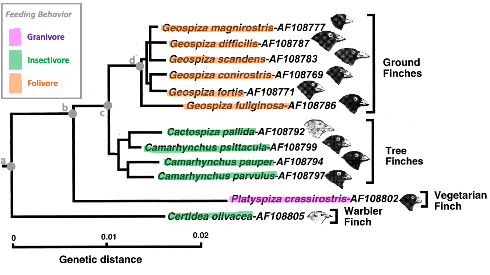

Phylogeny and Evolution
Contents
Phylogeny and Evolution¶
Deadline
Due by 11pm on Friday March 10.
Honor Code
This exam is open note/book/web, but must be done independently. Do not consult any other people (regardless of whether they are in or out of this course) or artificial intelligence (AI) in answering the questions. Handing in responses to the assignment for grading serves as your signature of the honor code.
Answer all questions either electronically or by hand. Label each of your answers with the corresponding question number. Scan or convert your document to a good quality PDF. Upload to gradescope by the deadline – make sure to tag all appropriate page(s) in your PDF for each question.
Please don’t hesitate to ask for clarifation on the wording of questions and/or expectations. Key expectations are highlighted with font style. For any multiple choice question that asks for an explanation of your reasoning: provide a correct answer selection as well as your reasoning for selecting that answer - the reasoning should logically (and unabiguously) explain for your answer selection. Not all multiple choice questions require for reasoning.
Section 1: Evolutionary history of feeding behavior¶
{kind=link}
Figure 1:
Q1 (2 points) Select the most complete sentence (among the choices) to add to the caption for Figure 1.
a) Phylogeny of finches with the character mapping of feeding behavior overlaid.
b) Phylogeny of 11 extant species of finches.
c) Phylogeny of finches with the character mapping and ancestral state reconstruction of feeding behavior overlaid.
Q2 (2 points) Select a correct sentence to add to the caption for Figure 1.
a) The nodes (labeled a, b, c, and d) mark potential points of phenotype divergence.
b) The nodes (labeled a, b, c, and d) mark potential points of phenotype convergence.
c) The nodes (labeled a, b, c, and d) mark the time of evolution of new phenotypes.
Q3 (2 points) Which node (a, b, c, or d) represents the last common ancestor for the entire set of extant species shown?
Q4 (5 points) Why is it least likely (by parsimony) that the last common ancestor of all extant species shown was a folivore?
(Answer this question in 1-3 concise sentences by drawing a conclusion in terms of the alternate hypotheses and quantitative results of your analysis under each hypothesis.)
Q5 (3 points)
Which node (a, b, c, or d) represents the last common ancestor for all Ground finches and Tree finches?
and
What was the most likely behavioral phenotype of that LCA? (in your explanation of the LCA phenotype, refer to the results of Q4 and consider all information available in Figure 1)
Q6 (2 points) Which node (a, b, c, or d) represents the last common ancestor for only the extant ground finch species?
Q7 (2 points) Consider the scenario in which two species that exhibit the same behavioral phenotype and are incorrectly separated in a phylogenetic hypothesis such that, by parsimony, their last common ancestor exhibited a different behavioral phenotype. In this situation, you would misinterpret the extant common phenotype as an example of [CONVERGENCE / DIVERGENCE / SHARED ANCESTRY] rather than correctly identifying it as an example of [CONVERGENCE / DIVERGENCE / SHARED ANCESTRY].
(Choose the appropriate term from each bracketed list to complete the sentence.)
Section 2: Evolutionary models for feeding behavior in offspring¶
Phenotypes and factors affecting evolutionary fitness of feeding behavior
Let’s consider two behavioral phenotypes associated with feeding behavior:
BEGGER = begs for food by making loud vocalizations.
SILENT = do nothing while waiting for food from the parent
Parents will feed their offspring no matter what, but loud vocalizations grab their attention and cause them to preferentially feed begging offspring over silent offspring if they are present.
We will assume that the amount of food a parent is able to gather is limited, and we will call this value “\(f\)” (for simplicity, assume that the amount of food that the parent is able to gather does not depend on the behavior of its offspring). Begging offspring get all of the food, but they also expend a lot of energy to produce vocalizations (a factor that we will call “\(e\)”) AND the vocalizations make them more noticable to predators and increase the likelihood that they will get attacked (a factor that we will call “\(p\)”).
Optimality Theory¶
Q8 (3 points) Given this setup, the most reasonable optimality theory model for the total net fitness of individual offspring (\(F\)) would be formulated as:
(Choose the one correct option from below and briefly explain your reasoning.)
a) \(f = - e - p\)
b) \(F = f - e - p\)
c) \(F = -f + e + p\)
d) \(F = f + e + p\)
Q9 (2 points) According to the optimality theory model you chose, the average fitness of the silent phenotype could depend on:
(Choose the one correct option from below)
a) whether conspecifics were beggers or silent.
b) the number of predators in the environment (and therefore the risk of predation).
c) whether \(e > p\) or \(p > e\) for the begging phenotype.
Q10 (3 points) Given the optimality theory model you chose (and its assumptions explained in the setup), under which of the following conditions would you predict that the silent phenotype would be stable at evolutionary equilibrium?
(Choose the one correct option from below and briefly explain your reasoning.)
a) When \(f\) (the food gathered by the parent) is greater for silent offspring than for begging offspring (assuming all other factors are the same for both phenotypes)
b) When \(e\) is greater for begging offspring than for silent offspring (assuming all other factors are the same for both phenotypes)
c) When \(p\) is greater for silent offspring than for begging offspring (assuming all other factors are the same for both phenotypes)
Game Theory¶
{kind=link}
Figure 2: Game theory model of begging versus silent feeding behavior phenotypes in offspring (following the convension that: columns = phenotypes of conspecifics; rows = net fitness of each phenotype being assessed). The factors in the model are the same as in the optimality theory model: \(f\) (the food gathered by the parent), \(e\) (energy to produce vocalizations), \(p\) (likelihood of being noticed/attacked by predators).
Q11 (4 points) According to the game theory model, beggers would have a greater net fitness in a population of [BEGGING / SILENT] offspring than in a population of [BEGGING / SILENT] offspring.
(Choose the correct words to complete the sentence above.
Then, select the option from below that provides the appropriate caveat based on game theory.)
a) However, this scenario is not possible because the silent phenotype is not the evolutionarily stable phenotype.
b) However, this scenario is not possible because the silent phenotype has a lower net fitness than the begging phenotype in a population of begging offspring.
c) However, this scenario is not possible because begging is the only evolutionarily stable phenotype.
d) However, this scenario would not be possible if the silent phenotype had a lower net fitness than the begging phenotype in a population of begging offspring.
Q12 (3 points) State the mathematical conditions for which begging would be the evolutionarily stable phenotype.
(Use the model shown in Figure 2. Show your work to set up the necessary inequality(ies), and simplify so that all of the ‘fitness increasing’ factors are on one side and all of the ‘fitness decreasing’ factors are on the other.)
Q13 (3 points) State the mathematical conditions for which silent would be the evolutionarily stable phenotype.
(Use the model shown in Figure 2. Show your work to set up the necessary inequality(ies), and simplify so that all of the ‘fitness increasing’ factors are on one side and all of the ‘fitness decreasing’ factors are on the other.)
Q14 (2 points) A population comprised of all begging offspring would be evolutionarily stable when:
(Refer to the conditions you determined in Q12 to choose the one correct option that completes the sentence.)
a) the likelihood of predation is less than the food obtained from the parent.
b) the likelihood of predation is less than the food that the parent is able to gather.
c) \(e\) is actually a negative number.
d) the combined fitness deficit caused by the increased likelihood of predation and energy needed to vocalize are less than half of the food that the parent is able to gather.
Summary¶
Q15 (2 points) Which is the more appropriate model (optimality theory or game theory) for understanding the feeding behavior of offspring, and why?
(Choose the one correct option)
a) Game Theory, because the fitness of the feeding behavior phenotypes likely do NOT depend on the strategies of conspecifics.
b) Game Theory, because the fitness of the feeding behavior phenotypes likely DO depend on the strategies of conspecifics.
c) Optimality Theory, because the fitness of the feeding behavior phenotypes likely DO depend on the strategies of conspecifics.
d) Game theory, because a mixed population of begging and silent phenotypes is evolutionarily stable, and game theory is the only type of model that can predict a mixed population.
Q16 (2 points) An assumption of both of optimality theory and game theory models is that:
(Choose the one correct option)
a) the models can predict the evolutionarily stable behavior of a species.
b) behavioral phenotypes change across phylogeny because of evolution.
c) behavioral phenotypes change across phylogeny because of natural selection.
d) the fitness of individuals depends on the phenotype of conspecifics.
e) natural selection reduces phenotypic variance among a species.